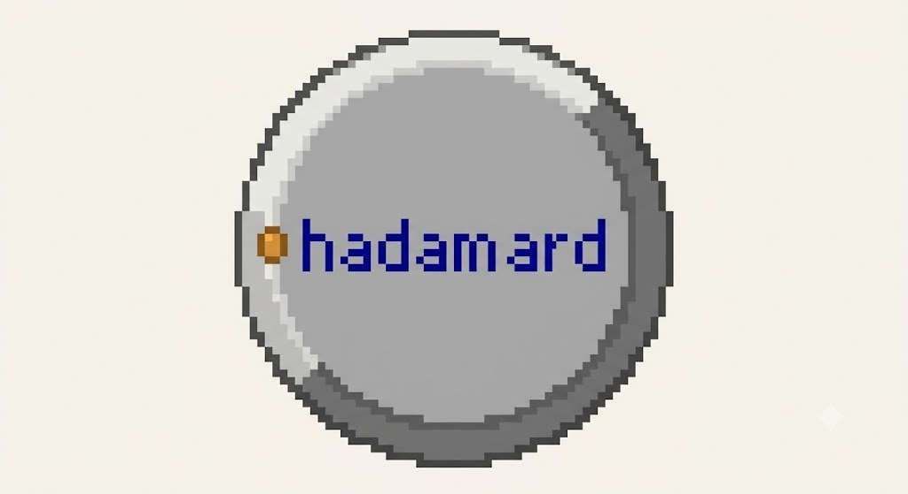
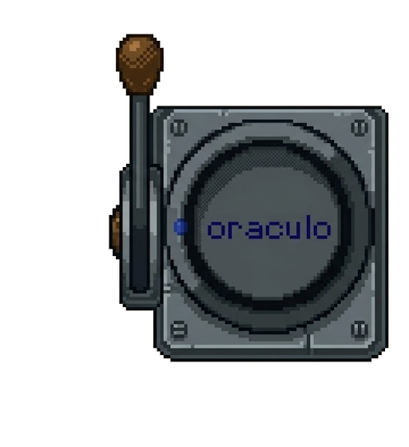
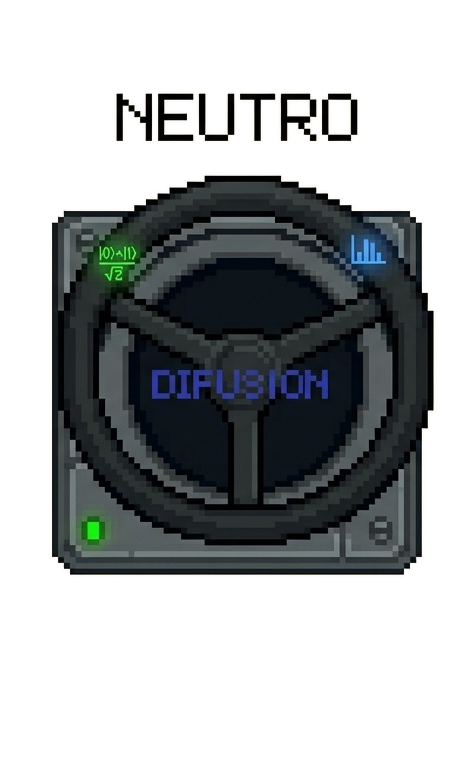

Circuito Cuántico · Nivel 1
Tu auto cuántico arranca entre N carriles, y por delante hay una red de obstáculos con la misma cantidad de olas que iteraciones reales tiene el algoritmo de Grover para ese circuito. El juego nunca te dice si vas por el carril correcto — solo ves los obstáculos y decides. Esquívalos como puedas y llega a la meta antes de que se acabe el tiempo.

Pulsa HADAMARD para arrancar. Empieza el reloj y aparece la pista de obstáculos.

El volante solo gira con el freno activo — sin freno, tocar ◀ o ▶ no hace nada. Es un drift real: primero frenás, después girás. Y puede que el freno se suelte solo por chance — hay que estar atento y volver a activarlo.

Con el freno activo, mantén presionado ◀ o ▶ para deslizarte entre carriles. Frenar también te hace avanzar más lento por la pista — más tiempo para reaccionar, pero gastas tu reloj más rápido.
Chocar un obstáculo le resta una iteración real al circuito que corre Qiskit al medir — nunca vas a ver un número que te diga si vas bien, pero esquivar limpio importa de verdad. El gráfico junto al HUD (naranja = oráculo, verde = difusor) muestra cuántas iteraciones arman esa red de obstáculos. La brújula externa (arriba de la pista) solo se va iluminando a medida que se acerca el resultado final.
Controles a los costados. Auto en vista 3D, pista en 2D. La medición final la corre un circuito real de Qiskit.